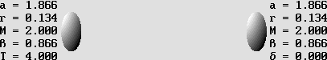
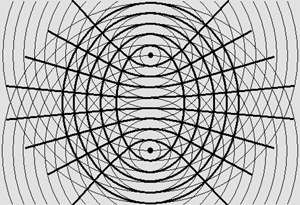
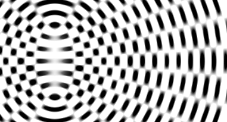
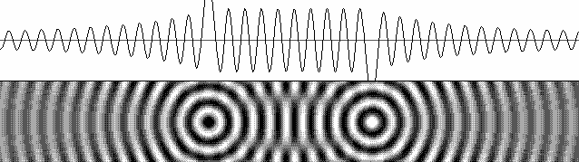
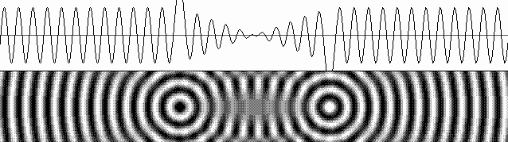
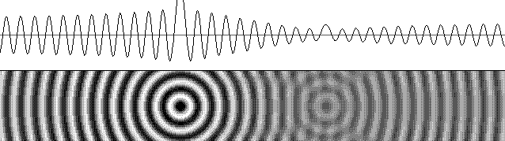

| 00 | 01 | 02 | 03 | 04 | 05 | 06 | 07 | 08 | 09 | 10 | 11| 12 | 13 | 14 | 15 | 16 | 17 | 18 | 19 | 20 | 21 | 22 | 23 | 24 | 25 | 26 | 27 | 28 | 29 | 30 | 31 | 32 | 33 | 34 |
THE WAVE MECHANICS

Action and reaction is certainly one of Newton's most important laws.
|
We may have to elaborate a still hardly conceivable New Mechanics where the speed of light is unattainable because inertia increases with velocity. |
Henri Poincare's "New Mechanics".
|
Matter Mechanics. Louis de Broglie rightfully proposed that matter mechanics should be called "The Wave Mechanics". But scientists usually prefer quantum mechanics because of Planck's constant. Even though this constant is useful, the wave properties are far more important. I am of an opinion that Newton's laws are still highly relevant on condition that the law of Relativity is invoked. This occurs because, as Christian Doppler himself discovered, a moving observer cannot perceive the Doppler effect in his environment. Newton's laws need some minor adjustments, though, because Poincare was right: the speed of light is unattainable. Furthermore, in 1904, Poincaré also said in St-Louis, USA: "The laws of physical phenomena are the same, whether for an observer fixed, or for an observer carried along in a uniform movement of translation, so that we have not or cannot have any means of discerning whether or not we are carried along in such a motion." Einstein proposed the postulate below in his 1905 first edition of his Theory of Relativity. It is clearly similar to Poincaré's: "The same laws of electrodynamics and optics will be valid for all frames of reference for which the equations of mechanics hold good." Newton's laws are definitely wrong from an absolute point of view, though. They should be replaced by Lorentz's laws based on the Lorentz transformations, which are definitely and absolutely true because it is how the Doppler effect transforms matter. The goal is to examine what is really going on. The point is that, from a mechanical and absolute point of view, the aether is the only admissible frame of reference. Any moving wave system must still be represented under the same space and time coordinates. Because any moving wave system undergoes the Doppler effect, the Lorentz additional mass, which is kinetic energy as a result of the wave contraction, must also be imperatively evaluated in the same unmoving frame of reference. Then action and reaction especially prove to be frankly unequal. I found that Active and Reactive Mass based on the Doppler effect are highly useful in order to evaluate active and reactive forces. The same calculus also indicates how forces will act in a fast moving systems and proves that Newton's laws are no longer valid. Matter is made of waves. We know since Louis de Broglie that matter particles exhibit wave properties. Indisputably, matter works by means or waves. Let us make it perfectly clear : there is no alternative. At this stage, it is not an assumption, it is a certainty. Additionally, the electron is not a metal marble covered in chrome. It cannot be made of matter. It is rather matter which is made of electrons. So, let us postulate that the electron is a standing wave system. Furthermore, these waves cannot be plane. They should be spherical. So, when two electrons come very close together, the wave addition must lead to the diagrams below: |

Note the concentric ellipsoids compatible with hyperboloids.
|
 |
|
 |
Distance: 10 wavelengths.
Waves add constructively between two electrons but they rather add destructively beyond them.
Then the central field of force should produce a repulsion effect.
|
 |
In this diagram, a half-wavelength was added to the distance.
Then two opposite fields of force should rather push both particles towards each other.
A capture phenomenon becomes possible because there is an equilibrium point in-between.
|
 |
One-way waves along the axis joining one electron and one proton are responsible for magnetic fields.
The wave direction is reversed for opposite spin and also for any lambda/2 distance difference.
This phenomenon is the origin of magnetic north and south poles.
UNIFYING ALL FORCES
|
All forces are transmitted by waves at the speed of light. Waves emitted by two material bodies add constructively between them and produce a field of force. The field of force exerts a radiation pressure on both sides and the result is opposite motion. |
|
The Radiation Pressure. John Poynting showed that the light exerts a radiation pressure. Actually, not just the light. All waves propagating through the aether, whose speed is also the speed of light, can more or less "push" matter. The pressure mechanism is not that simple, though, because aether waves are carrying very few energy as compared to that of the electron central antinode. The whole wave addition, which produces standing waves, must rather be considered. For example, two electrons or positrons emitting all azimuth spherical waves should produce the characteristic standing wave set below.
The electrostatic field of force. It may be called "biconvex" because only curved waves are adding constructively.
The cross section is similar to the diffractive (or zonal) lens.
Because the field of force may be seen as thousands of stacked lenses focusing towards both electrons, one should indeed expect a strong lens effect from it. But from an optical point of view, those lenses definitely cannot work because the concentric zones are moving away from the center. The phase rotation cancels the focusing effect. Fortunately, the electron works very much like a stroboscope. This well known device can immobilize any rotating system, and it is also true in the case of a phase rotation. The electron is indeed a perfect stroboscope because its standing waves periodically appear everywhere simultaneously, and then disappear. And because a significant part of the electrostatic field is located inside both electrons, this should activate the field of force amplification in such a way that some of the radiated energy is finally transmitted directly towards both electrons. Then the phase coincides and the radiation pressure is much more intense. On the contrary, the positron quadrature cancels the stroboscope effect and there is no radiation pressure any more. But the equivalent pressure responsible for inertia is still present on the opposite side. This finally ends up with a symmetrical attraction effect. Additionally, more electrons in the vicinity should add their own standing waves to the process and a synchronization process should take place. Then the electron spin as a common phase or opposite phase (which is simultaneous) becomes evident. Positrons, however, are all hidden inside protons where the required quadrature is present. The shade effect. It should be understood that any attraction effect actually occurs as a result of a pressure from the opposite side. For example, all electrons and positrons in the sun collect their energy from plane aether waves, whose residual energy is smaller when they go on propagating towards the earth. Those propagating from the opposite direction are more powerful and finally, they will push the Earth toward the Sun. However, this shade effect is cancelled because all electrons and positrons in the Sun also send waves toward the Earth and the result is nil. So, gravity cannot be explained by a shade effect. This was also established by Poincaré, yet he was unaware of the radiation pressure mechanism. Actually, all waves emitted by matter inside the sun are not plane any more. They are obviously spherical, and the resulting radiation pressure for "biconvex" fields of force is definitely weaker than that of a "plano-convex" one. Now this explains gravity. The diagram below shows that the gluonic field, which is made of plane standing waves at least in the center, must radiate most of its energy on the axis. Unlike electrons and positrons, the field does not radiate the equivalent energy transversally any more. This is why the gluon shade effect really works. The gluon can attract all neutral, positive or negative particles all around except along the axis : |

The quark and its gluonic field of force.
The quark alone is stable by itself but attracted particles are likely to destroy its equilibrium.
|
The lens effect. Standard waves can propagate into each other without interference, but standing waves do interfere. Although it is not a well known fact, the lens effect really works too. This can easily be tested inside air, for example. Depending on its mechanism, a compressible medium should transmit faster waves if the pressure is higher. Standing waves alternately compress then dilate the aether substance inside antinodes. Then the wave speed is slower of faster according to the compression ratio and the wave is progressively scattered. Because energy cannot be lost, there is an action and reaction effect which explains the electron amplification process. Wave gears: pure mechanics. One easily understands how minutes and hours inside a pendulum clock are converted by means of gears. There should be a 1 : 60 tooth ratio, but the important point is that all teeth must be compatible. Additionally, gears may contain more or less of them using only integers, as one and a half teeth obviously cannot do the job. This analogy applies to matter. Matter particles really work using "wave gears". Because the electron wavelength is constant, there cannot be any wavelength incompatibility inside matter. And because motion introduces a Doppler effect, hence a wavelength difference, motion inside an atom must generate a specific well defined phenomenon. This explains Planck's constant, hence quanta. The original "ultraviolet catastrophe" solved by Max Planck was not that simple, but this phenomenon is still a matter of integer wavelength because it is all about the Fresnel number n, which must also be an integer. Augustin Fresnel used it to predict where the axial zero amplitude zones should be located inside the well known Fresnel-Fraunhofer diffraction pattern below.
The distance L to each zero and maximum amplitude zones is given by: L = r 2 / (n * lambda) The radius r is that of a plane circular aperture. The Fresnel-Fraunhofer diffraction pattern is typically present in the laser or pinhole camera beam, but any composite wave emitter should also produce a similar pattern. Thus, because the atomic nucleus exhibits wave properties and because its structure is obviously composite, it should produce similar schemes along privileged axes. This is not disputable. Electrons should be very sensitive to those zero amplitude zones. They are likely to be captured inside any of them on a probability basis. The electron capture and expulsion process because of excessive heat then becomes easily explainable. Clearly, each atomic layer radius and the electron behavior inside them is directly linked to this pattern. On the one hand, any excessive energy input such as heat can cause the electron expulsion and the required energy should be always the same according to a specific Fresnel number. It is a quantum of energy. On the other hand, after a short period of time, the electron is captured again by another zero amplitude zone. Then it oscillates until it is fully immobilized and this process liberates the same quantum of energy. Oscillations will cause the wave pattern to undulate: this is how the light is emitted. The light frequency is that of the undulations. Finally, the emitted energy is always the same according to a given zero energy zone. Then one must admit that the well known Balmer series is linked to the Fresnel number.
The hydrogen atom radiates light on frequencies compatible with the Fresnel number.
This is the origin of Planck's constant. The quantum of energy is definitely correct. But there are no photons there. Kinetic energy. The gain in mass which is responsible for kinetic energy is well known to be given by: gamma * m – m. It was predicted by Lorentz even though he was not aware that the true cause was the Doppler effect. This means that kinetic energy for any material body traveling at .866 c (gamma = 2) equals its own mass at rest. Then kinetic energy for one kilogram is easily given by Einstein's formula. Please note that according to the MKS system, the speed of light c below is: 300 000 000 meters per seconds. E = m c 2 = c 2 = 9 * 10 ^ 16 joules. Kinetic energy = (gamma * m – m) c 2 One kilogram mass gain = c 2 = 9 * 10 ^ 16 joules.
To be compared to Newton's mechanics: Kinetic energy = m v 2 / 2 One kilogram = v 2 / 2 = 3.375 * 10 ^ 16 joules (definitely wrong).
However, both formulae are practically equivalent for slower velocities as far as the gamma factor is very near to 1. For example, let us check 3 million meters per second using m = 1: beta = .01 gamma = 1.00005 Kinetic energy = (gamma * m – m) c 2 .00005 kilogram mass gain = .00005 * c 2 = 4.5 * 10 ^ 12 joules.
To be compared to Newton's mechanics: Kinetic energy = m v 2 / 2 1 kg * v 2 / 2 = 3 000 000 ^ 2 / 2 = 4.5 * 10 ^ 12 joules (accurate).
Because the Doppler effect is clearly involved, this is another evidence that matter is made of waves.
The tip of the iceberg. This page will never be complete because the Lorentz transformations severely modify physics as a whole. The goal was to expose some examples. This web site also contains 33 pages which are more or less dedicated to the Wave Mechanics, and it will become more and more explicit over the years. This evolution could end up with a cleaner, cheaper, dramatic revolution in the way we are using energy. Unfortunately, this appears unlikely to be possible soon. |
|
I am working on a new series of programs on waves and matter mechanics. The program WaveMechanics05 deserves careful attention. Now, one can observe 2-D waves undergoing hard or soft reflection on reflectors. There are three display options for amplitude, energy, and also standing waves, thanks to Mr. Marcotte's new calculus using Lagrangian. Reversing the wave direction (they return to their origin) or transforming traveling waves into standing waves is possible. A special function was added in order to check the reflector gain, for example that of the corner reflector, which is surprisingly effective. One can also observe why a parabola produces straight waves capable of staying inside a narrow energy beam. A new Compiler for FreeBASIC (version 0.20.0b) was released in 2008 with some new requirements. Gosub keywords are not allowed any more and variables including integer must be declared. However, all previous programs will still work properly on condition that they are edited as follows: #lang
"fblite" Option
Gosub The FreeBASIC IDE editor is available here: http://fbide.freebasic.net/ |
| 00 | 01 | 02 | 03 | 04 | 05 | 06 | 07 | 08 | 09 | 10 | 11| 12 | 13 | 14 | 15 | 16 | 17 | 18 | 19 | 20 | 21 | 22 | 23 | 24 | 25 | 26 | 27 | 28 | 29 | 30 | 31 | 32 | 33 | 34 |
|
|
Bois-des-Filion in Québec. Email Please read this notice. On the Internet since September 2002. Last update October 2, 2009. |